Ogni contributo verifica fonti primarie e indica cosa cambia per il destinatario. Mai marketing, mai pareri travestiti.
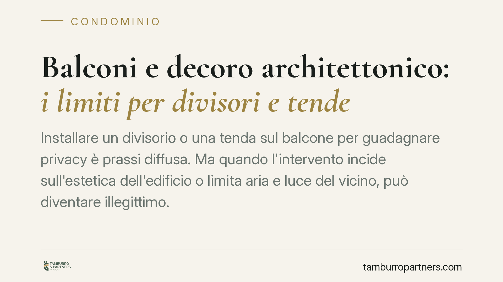
Installare un divisorio o una tenda sul balcone per guadagnare privacy è prassi diffusa. Ma quando l'intervento incide sull'estetica dell'edificio o limita aria e luce del vicino, …
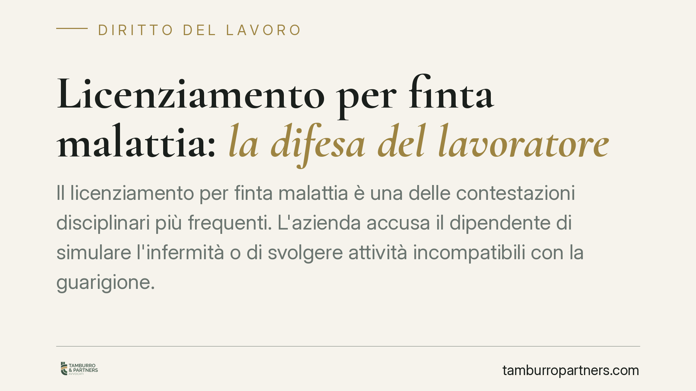
Il licenziamento per finta malattia è una delle contestazioni disciplinari più frequenti. L'azienda accusa il dipendente di simulare l'infermità o di svolgere attività incompatibil…
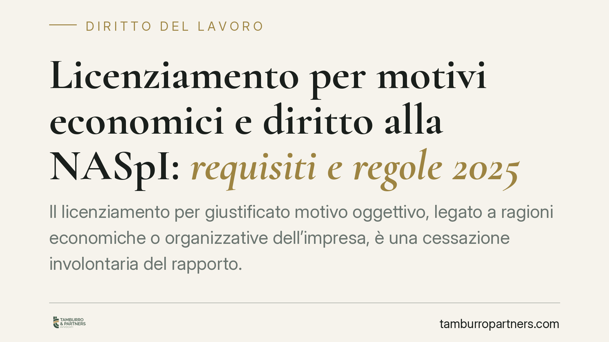
Il licenziamento per giustificato motivo oggettivo, legato a ragioni economiche o organizzative dell'impresa, è una cessazione involontaria del rapporto. Per questo apre la strada …
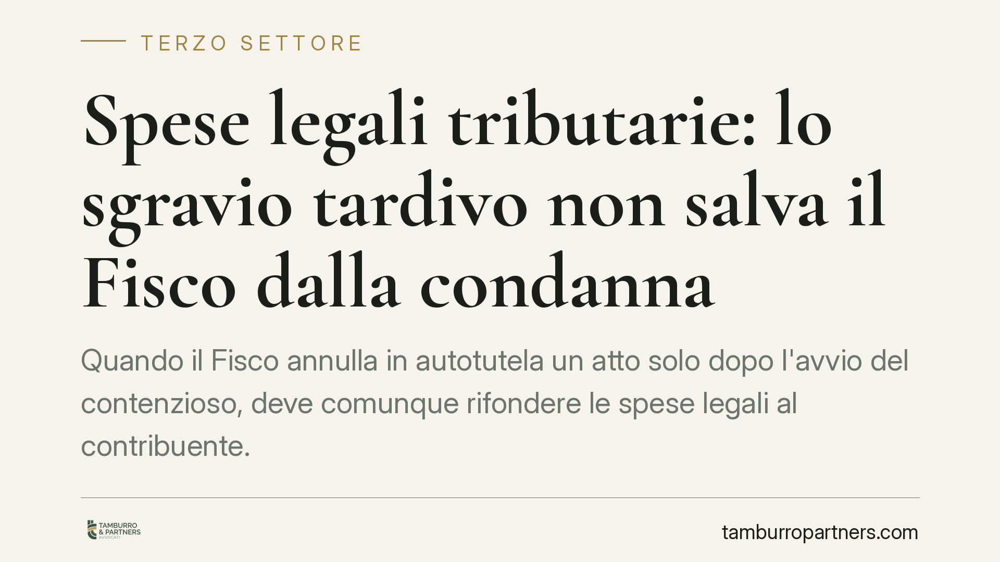
Quando il Fisco annulla in autotutela un atto solo dopo l'avvio del contenzioso, deve comunque rifondere le spese legali al contribuente. Lo ribadisce la Cassazione, censurando la …
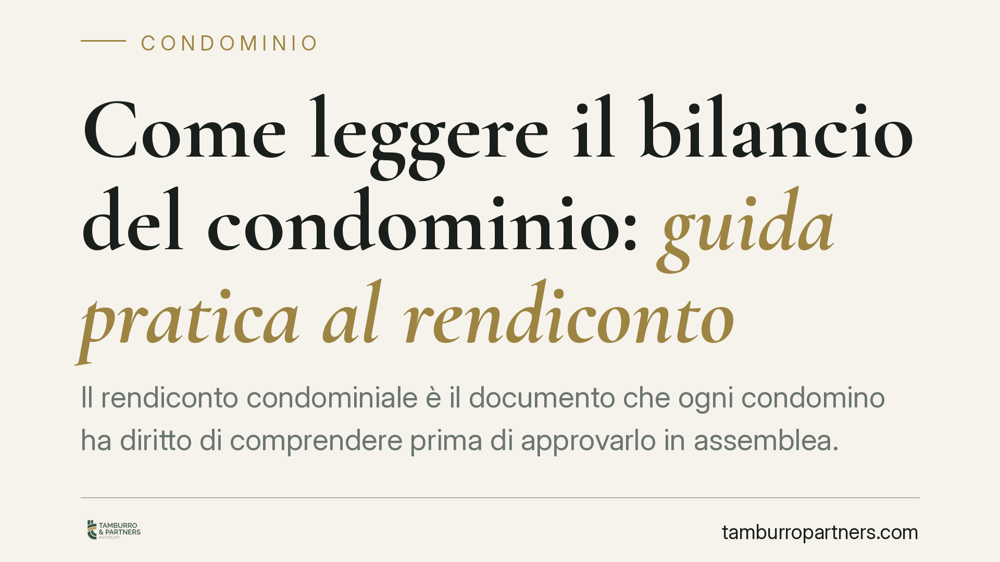
Il rendiconto condominiale è il documento che ogni condomino ha diritto di comprendere prima di approvarlo in assemblea. Saperlo leggere significa controllare la gestione, verifica…
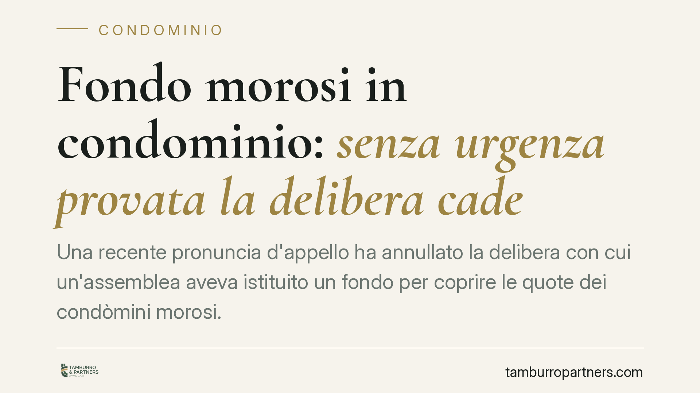
Una recente pronuncia d'appello ha annullato la delibera con cui un'assemblea aveva istituito un fondo per coprire le quote dei condòmini morosi. Senza urgenza dimostrata e senza m…
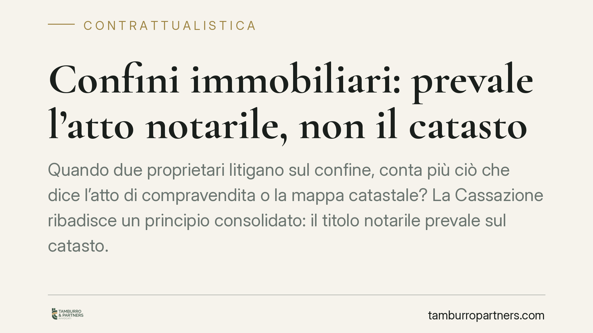
Quando due proprietari litigano sul confine, conta più ciò che dice l'atto di compravendita o la mappa catastale? La Cassazione ribadisce un principio consolidato: il titolo notari…
Un condomino può usare in via esclusiva il cortile, il lastrico o un altro bene comune? Solo con il consenso di tutti i condomini. Lo ribadisce la Corte di Cassazione con la senten…
Una struttura turistica in multiproprietà segue le stesse regole assembleari di un condominio ordinario. Lo afferma il Tribunale di Genova con la sentenza 1889/2025, che applica an…
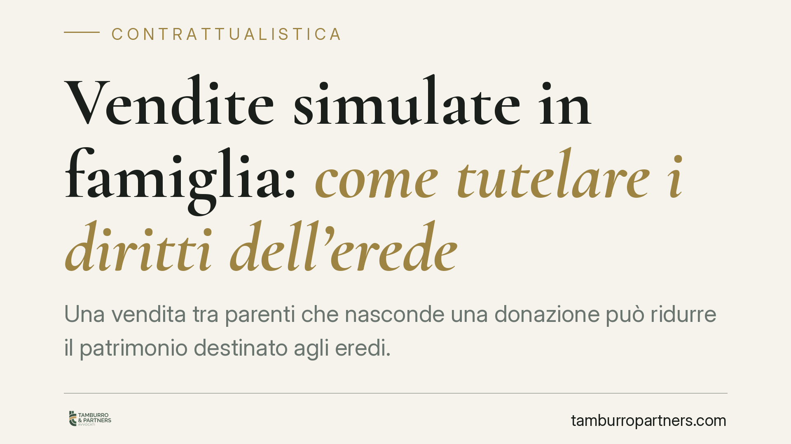
Una vendita tra parenti che nasconde una donazione può ridurre il patrimonio destinato agli eredi. Il Tribunale di Catania, con la pronuncia del 14 maggio 2026, torna sul tema dell…
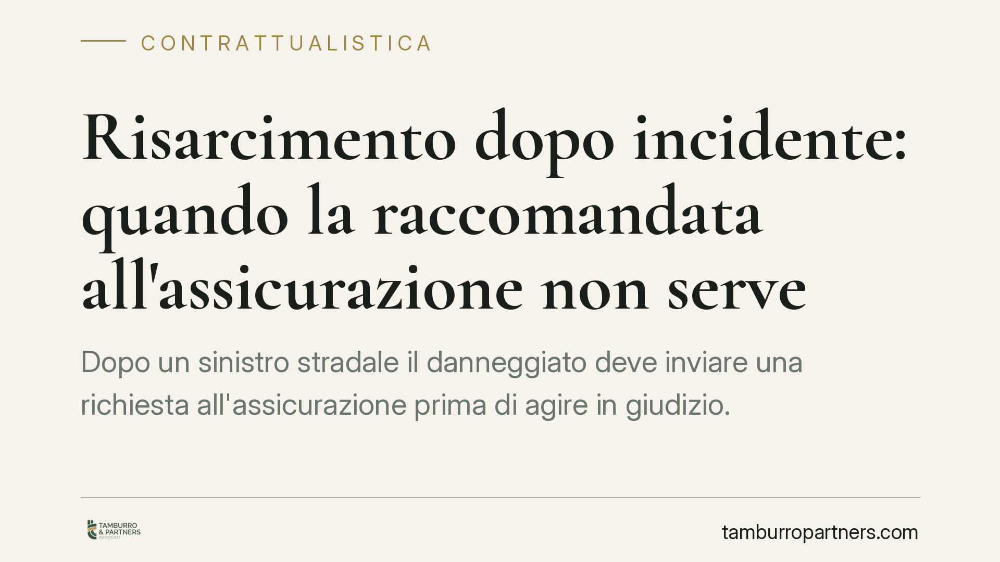
Dopo un sinistro stradale il danneggiato deve inviare una richiesta all'assicurazione prima di agire in giudizio. Ma la forma della raccomandata è sempre obbligatoria? La Corte di …
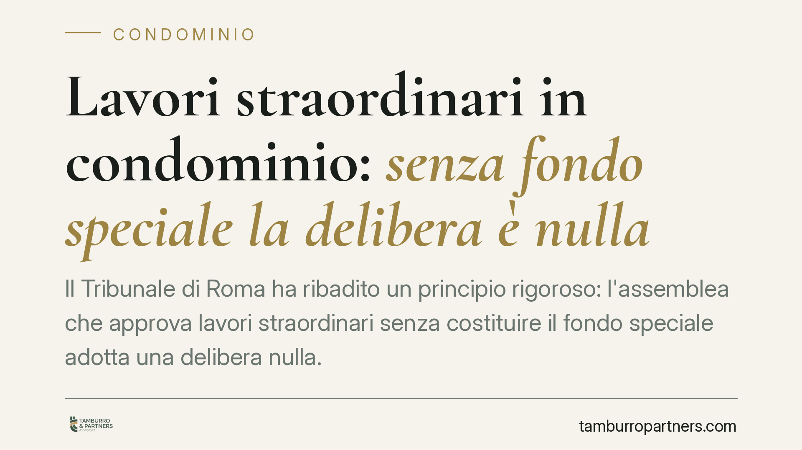
Il Tribunale di Roma ha ribadito un principio rigoroso: l'assemblea che approva lavori straordinari senza costituire il fondo speciale adotta una delibera nulla. Una pronuncia che …
Con il messaggio 1791 del 28 maggio 2026 l'INPS semplifica il ripristino delle prestazioni assistenziali legate all'invalidità. Chi le ha viste sospese per superamento dei limiti r…
La videosorveglianza nei luoghi di lavoro resta uno dei terreni più delicati del diritto del lavoro. La Cassazione ribadisce un principio netto: le telecamere in negozio sono ammes…
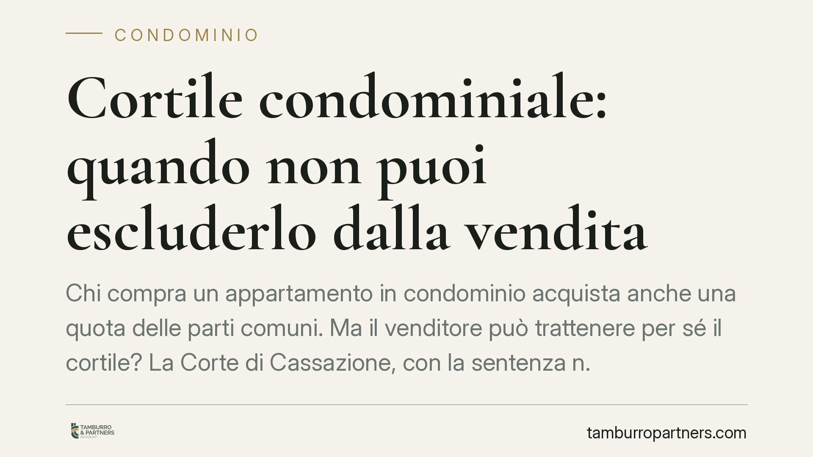
Chi compra un appartamento in condominio acquista anche una quota delle parti comuni. Ma il venditore può trattenere per sé il cortile? La Corte di Cassazione, con la sentenza n. 1…
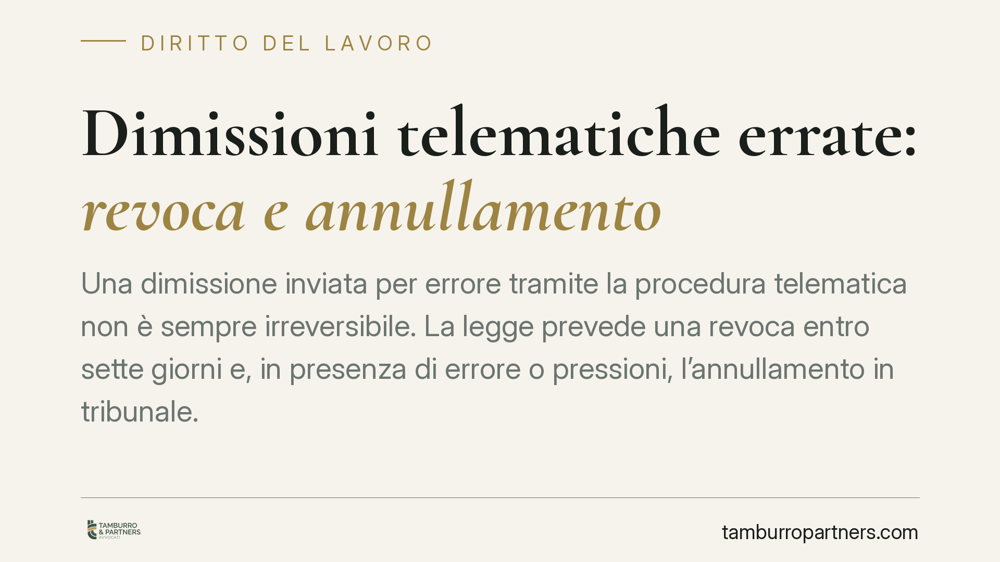
Una dimissione inviata per errore tramite la procedura telematica non è sempre irreversibile. La legge prevede una revoca entro sette giorni e, in presenza di errore o pressioni, l…
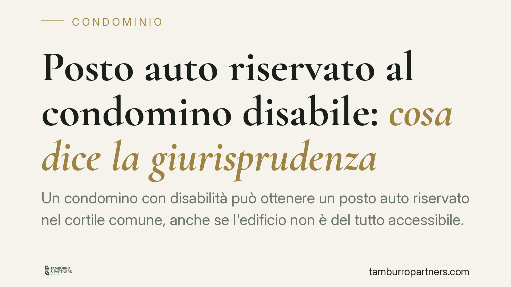
Un condomino con disabilità può ottenere un posto auto riservato nel cortile comune, anche se l'edificio non è del tutto accessibile. Lo conferma la giurisprudenza di merito, che f…
Dal 7 giugno 2026 entra in vigore il Decreto Legislativo n. 96/2026, che introduce nuovi obblighi di trasparenza retributiva a carico delle aziende. L'obiettivo dichiarato è ridurr…
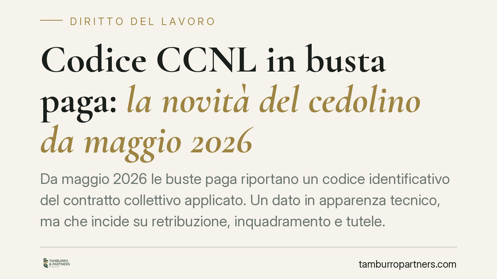
Da maggio 2026 le buste paga riportano un codice identificativo del contratto collettivo applicato. Un dato in apparenza tecnico, ma che incide su retribuzione, inquadramento e tut…
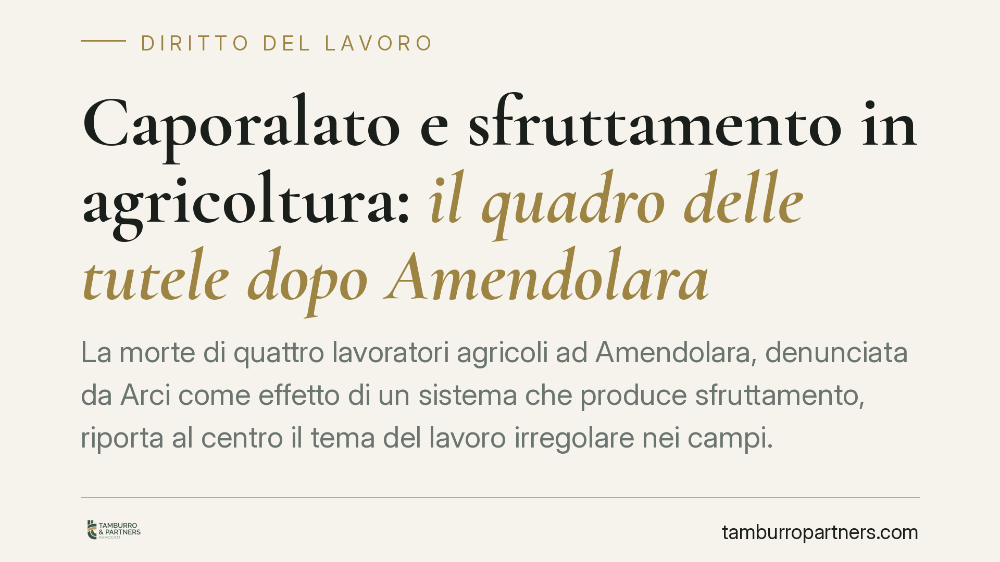
La morte di quattro lavoratori agricoli ad Amendolara, denunciata da Arci come effetto di un sistema che produce sfruttamento, riporta al centro il tema del lavoro irregolare nei c…
La Cassazione civile torna sul rapporto tra controlli a distanza e licenziamento disciplinare, precisando quando le registrazioni video possono fondare un recesso anche in assenza …
Un bilancio condominiale poco chiaro non è un dettaglio formale. Quando il rendiconto mescola criteri contabili diversi o manca della nota esplicativa, la delibera di approvazione …
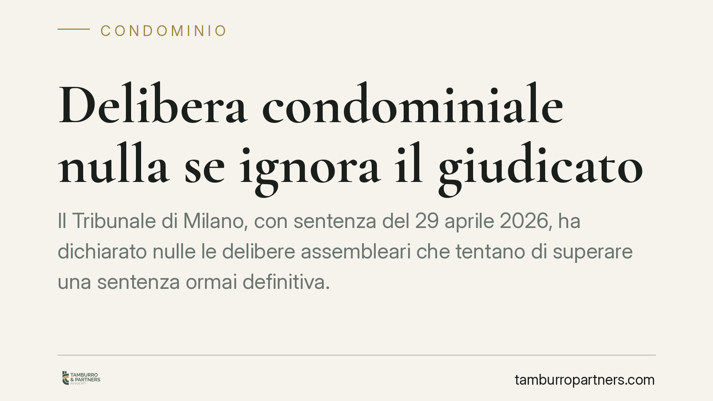
Il Tribunale di Milano, con sentenza del 29 aprile 2026, ha dichiarato nulle le delibere assembleari che tentano di superare una sentenza ormai definitiva. Il principio è netto: l'…
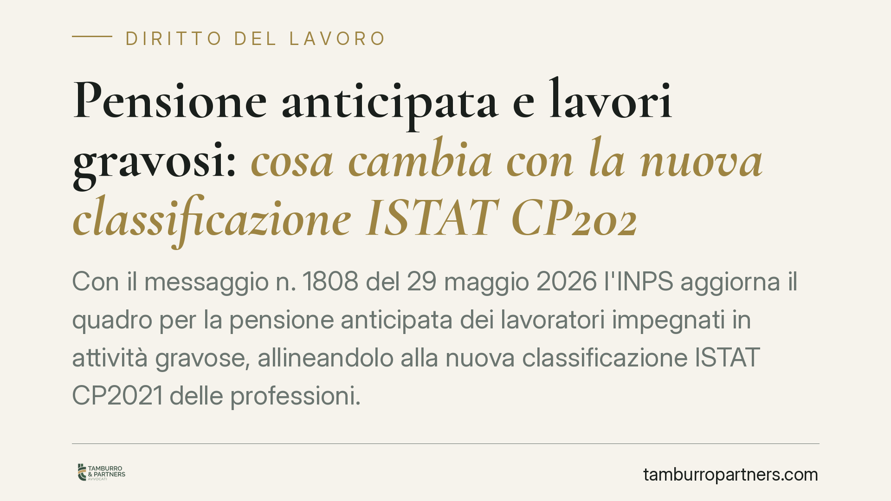
Con il messaggio n. 1808 del 29 maggio 2026 l'INPS aggiorna il quadro per la pensione anticipata dei lavoratori impegnati in attività gravose, allineandolo alla nuova classificazio…
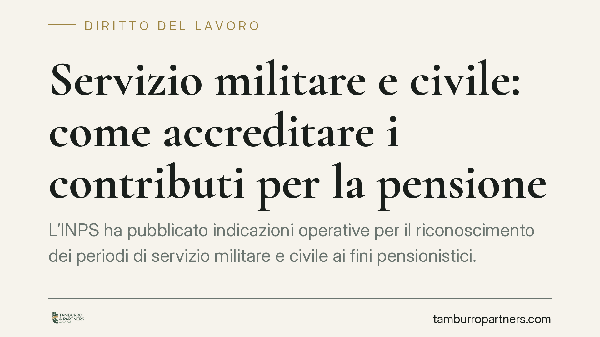
L'INPS ha pubblicato indicazioni operative per il riconoscimento dei periodi di servizio militare e civile ai fini pensionistici. Si tratta di contributi figurativi che possono inc…
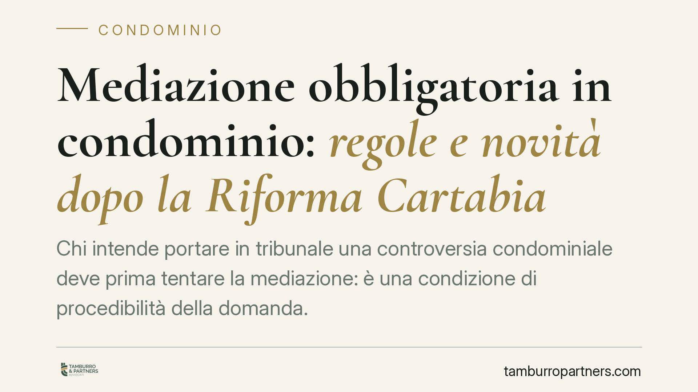
Chi intende portare in tribunale una controversia condominiale deve prima tentare la mediazione: è una condizione di procedibilità della domanda. La Riforma Cartabia ha ridisegnato…
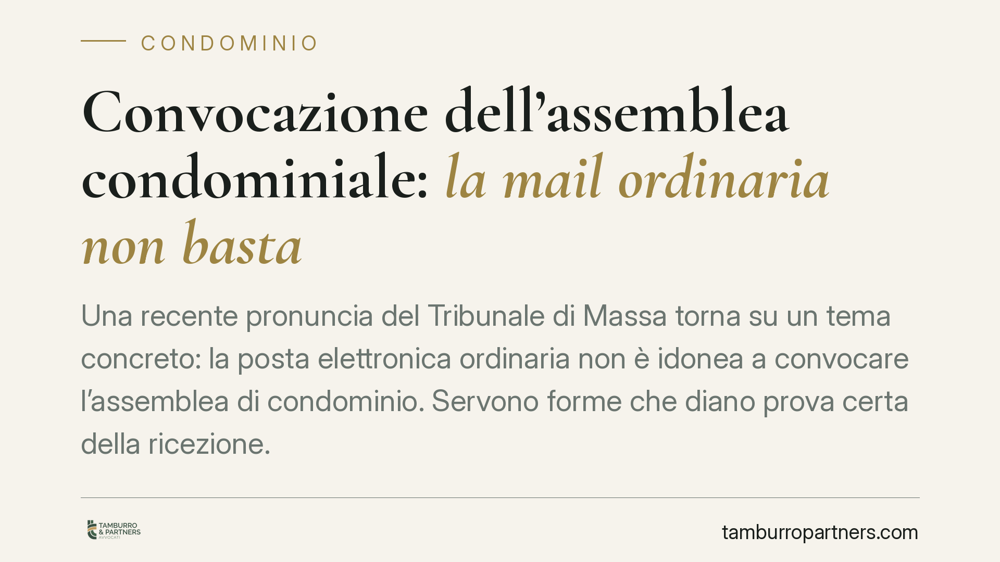
Una recente pronuncia del Tribunale di Massa torna su un tema concreto: la posta elettronica ordinaria non è idonea a convocare l'assemblea di condominio. Servono forme che diano p…
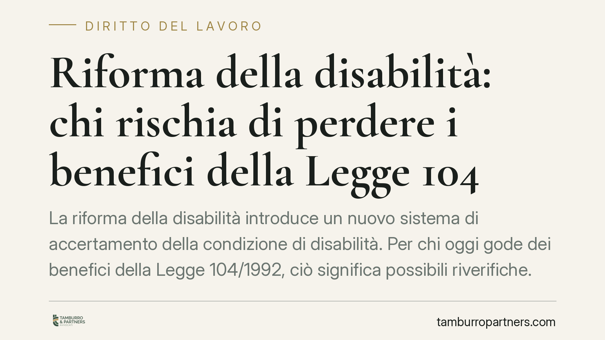
La riforma della disabilità introduce un nuovo sistema di accertamento della condizione di disabilità. Per chi oggi gode dei benefici della Legge 104/1992, ciò significa possibili …
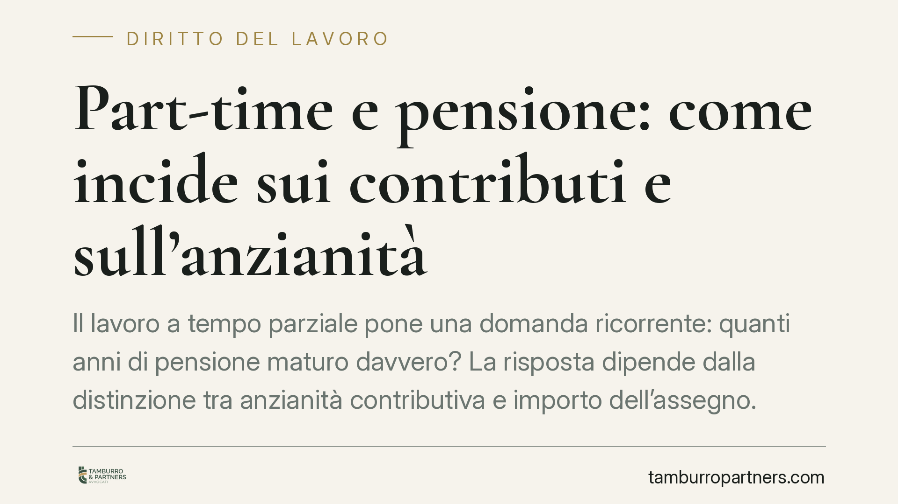
Il lavoro a tempo parziale pone una domanda ricorrente: quanti anni di pensione maturo davvero? La risposta dipende dalla distinzione tra anzianità contributiva e importo dell'asse…
Il Garante per la protezione dei dati personali ha richiamato l'attenzione sui rischi dell'intelligenza artificiale applicata al rapporto di lavoro, in particolare sui sistemi che …